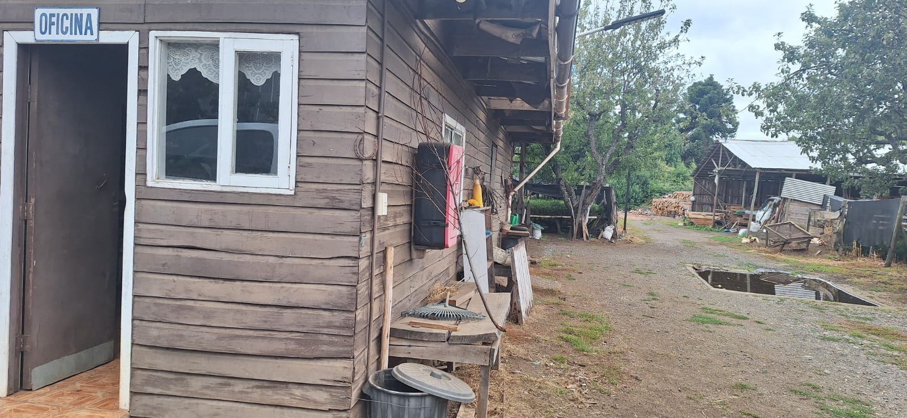

Atención cercana
Orientación simple para elegir plantas según el espacio, clima, luz y objetivo del cliente.
Sobre nosotros
En Vivero Los Álamos trabajamos con dedicación para entregar plantas, árboles y frutales de calidad, apoyando a nuestros clientes en la creación de jardines, huertos y espacios naturales.

Orientación simple para elegir plantas según el espacio, clima, luz y objetivo del cliente.
Variedades para jardines, huertos, patios, parcelas y proyectos con identidad local.
Presencia en Nueva Imperial, Región de La Araucanía, con foco en especies útiles para la zona.
Texto editable
Este espacio está preparado para sumar años de experiencia, especialidades, historia familiar, tipos de clientes atendidos o cualquier detalle que ayude a transmitir confianza.